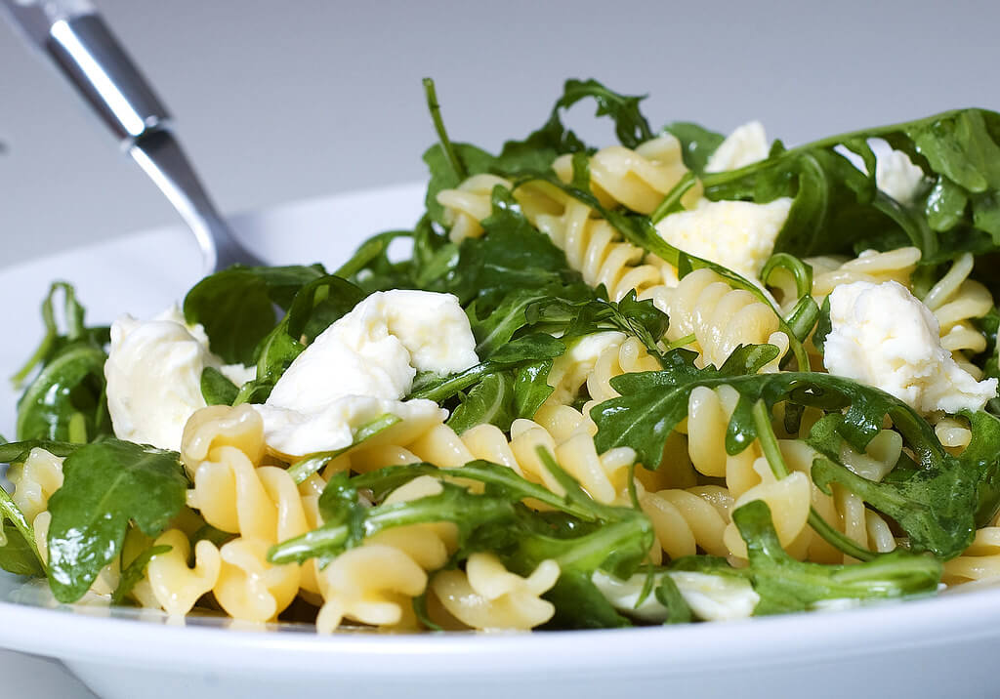

酪梨班迪蛋

食材：
蛋1顆、 烤吐司1片、 酪梨1顆、 檸檬汁1大匙、 海鹽、黑胡椒、花生（裝飾用）
作法：
1.將酪梨塊、檸檬汁跟佐料用湯匙攪拌在一起，鋪在烤好的吐司上。
2.因應個人喜好選擇炒蛋、太陽蛋或水波蛋，把蛋放在酪梨上。
3.最後可用少許黑胡椒和花生當擺盤裝飾。
蛋1顆、 烤吐司1片、 酪梨1顆、 檸檬汁1大匙、 海鹽、黑胡椒、花生（裝飾用）
1.將酪梨塊、檸檬汁跟佐料用湯匙攪拌在一起，鋪在烤好的吐司上。
2.因應個人喜好選擇炒蛋、太陽蛋或水波蛋，把蛋放在酪梨上。
3.最後可用少許黑胡椒和花生當擺盤裝飾。